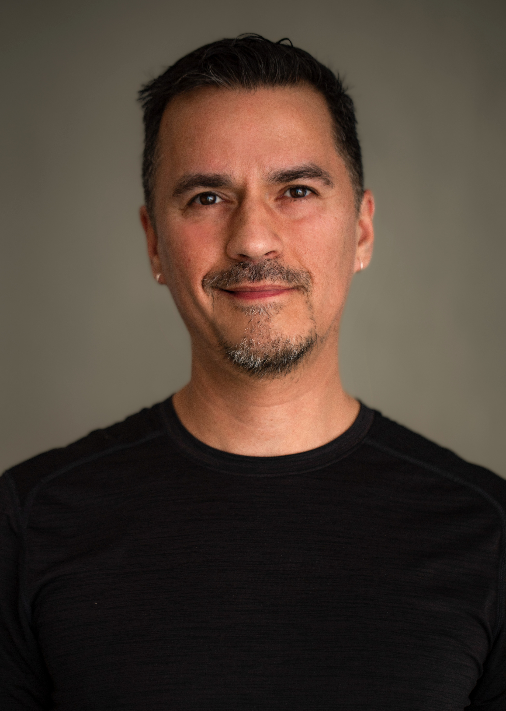
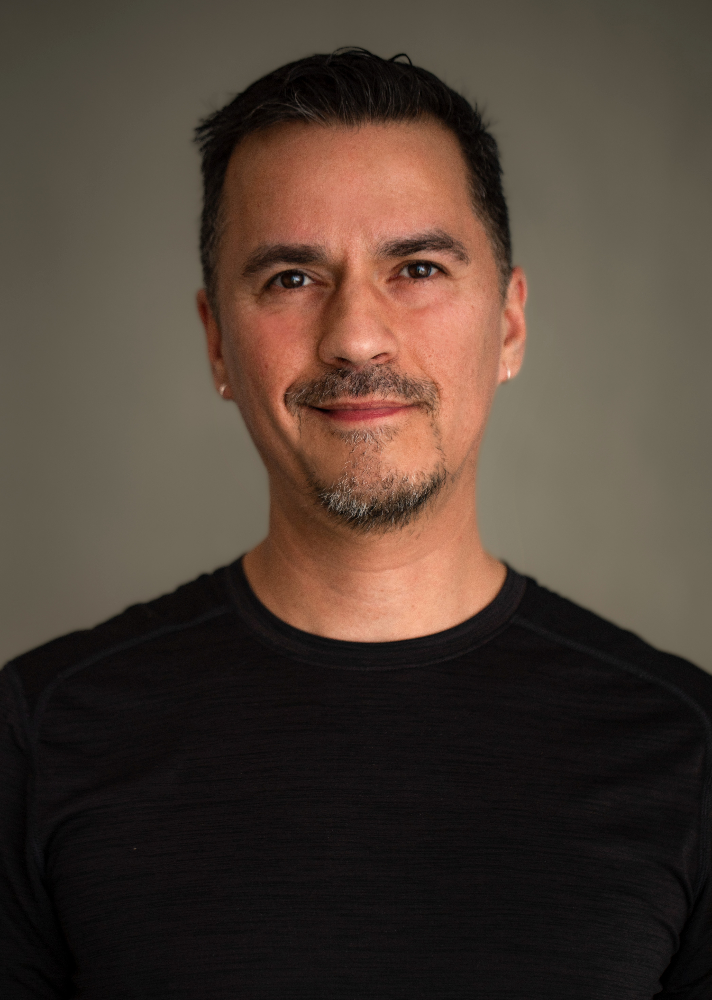

Research om Massage Fusion
Funktion
Virksomheden Massage Fusion’s hjemmeside fungerede egentlig okay da vi fandt den. Dog var der nogle essentielle design-valg og et til tider meningsløst Indretnings-Arkitektur. På det daværende site kunne man se alt for mange oplysninger man var ligeglade med og for lidt af dem der faktisk betød noget.
Se mereKoncept
Massage Fusion er en massage klinik på Nørrebro som har et unikt tilbud – Massage Fusion. Dette er en ny teknik som terapeuterne selv har skabt. Hos massage fusion er det klientens individuelle problematikker der bliver lavet behandlinger ud fra. Og desuden er det et super hyggeligt sted at være. Det er det vigtigste ved deres koncept.
Se mereNy ide
Vi havde brug for en helt ny omorganisering. Derfor var det første vi gjorde at strukturere i indholdet og lave et helt nyt sitemap så vi fik et overblik over hvad vi havde med at gøre. Herefter skulle design-processen i gang.
Se mereI gruppearbejde gik vi i gang med at udarbejde moodboards hver for sig hvorefter vi kunne samle ideerne til et style-tile. Vi fik hver overdraget en side som vi fik ansvaret for at skulle kode – ud fra vores fælles ideer.
Vi gik efter at sitet skulle ustråle ro. Vi gjorde plads til at fortælle om deres unique selling point, behandlingerne og de mere praktiske ting som der haltede lidt førhen. Klik herunder for at se meget mere af vores process!
Se mereNye billeder til Massage Fusion
 


Projektet
Redesign af website
Jeg er rigtig godt tilfreds med vores færdige site. Det indhold vi fik produceret i form at billeder og videoer kom til at understøtte den visuelle tråd rigtig godt, og vi kom frem til et resultat som vi som gruppe kan være stolte af synes jeg.
Se projektet onlineVideo-produktion for Massage Fusion